Максим
Алексей Быков
Георгий И. Дауге
Юра сразу покупает тур: в его ситуации так очевидно проще.
Основные вводные - приемлемого качества.
Отель в центре тайской жизни: чтобы и еда, и качественный пляж,
достопримечательности, и рестораны.
 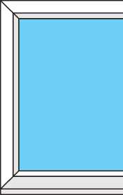
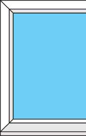
Юра носит линзы, и у него как раз заканчивается
запас - нужно купить новые.
Отель центре тайской жизни: чтобы и еда, и качественный
пляж, достопримечательности, и рестораны.
 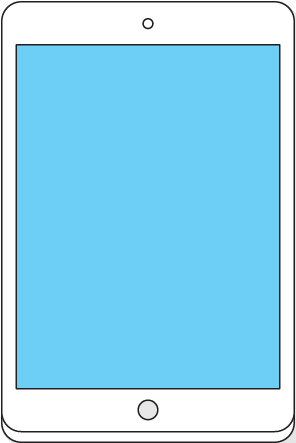
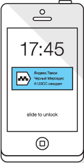
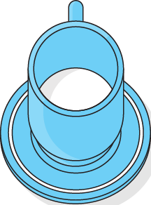
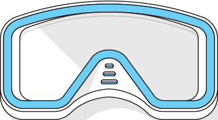
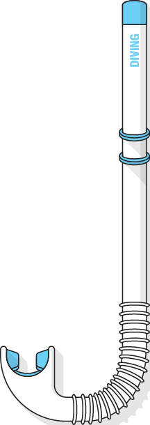
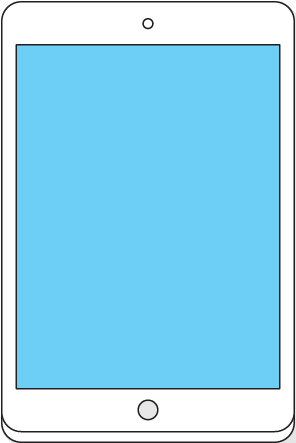
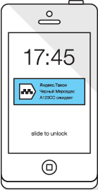
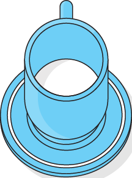
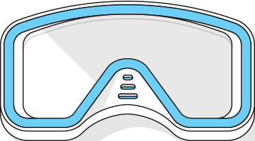
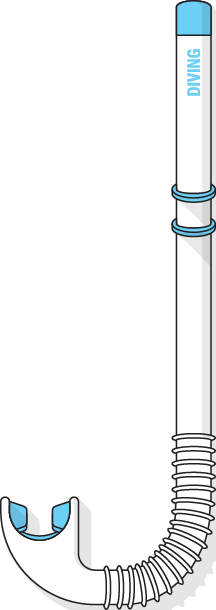
Что Юра точно не хочет упустить, так это возможность попробовать
местную еду. Каждый вечер они с женой -
Каждый вечер они с женой - иногда с детьми, иногда вдвоем
- отправляют в новый местный ресторан.
Максим
Алексей Быков
Георгий И. Дауге